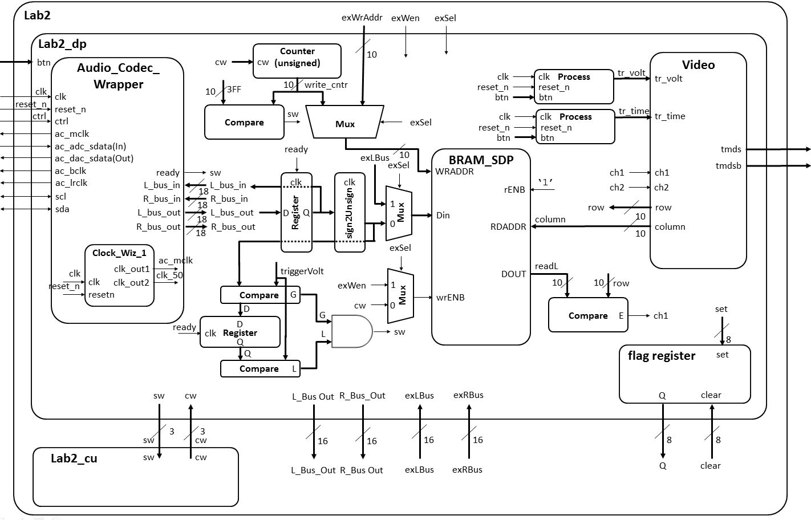

| Start date: | February 7/8 |
| End date: | February 15/16 |
| Lab: | 2 |
| Status | Complete |
| Lab 2 Cutsheet | ECE_383_Lab2_Cutsheet.pdf |
| Lab 2 Editable Block Diagram | ECE383_Lab2_Block_Diagram.pptx lab2_block_diagram.vsdx (Visio file) |
| Lab 2 Supplemental PowerPoint | ECE_383_Lab2.pptx |
Lab 2 - Data Acquisition, Storage and Display
Lab Overview
In this lab, we will integrate the video display controller developed in Lab 1 with the audio codec on the Nexys Video board to build a basic 2-channel oscilloscope. When complete, your lab should generate an output similar to the picture below.
Architecture
Just like the design of Lab 1, Lab 2 is broken down into a bunch of separate modules, shown in the block diagram below. Some of the components in the block diagram will be given to you and some you created in Lab 1. It is important to note that some of the components and signals associated with this diagram will not be needed for Lab 2, but have been included because you will need them in Labs 3 and 4.
Consider the data in the diagram as flowing from left to right. You will provide an input signal to the Nexys board via a 3.5mm cable connected to the blue line-in jack. This signal then passes through an Analog Devices ADAU1761 SigmaDSP Audio Codec. The ADAU1761 samples the audio input at 48kHz into separate 18-bit 2's complement left and right channels. The ADAU1761 then transfers this data to our Artix 7 chip over a serial bus through the 7 signals on the left side of the Lab2 component. You can read more about the audio codec on page 27 of the Nexys Video manual (here).
The serial protocol coming from the audio codec is quite complex, so you will be given the Audio Codec Wrapper component as an interface to extract the incoming signal (Audio Codec Wrapper in the Figure above). Whenever new converted data is ready from the Audio Codec, the ready signal will go high for a single clock cycle. Your circuit will then do two things with the incoming L_bus_out and R_bus_out signals: First, it will loop both of these signals back into the Audio Codec so that you can verify (by listening on the green line-out jack) that the Audio Codec hardware and firmware are operating correctly. This is accomplished using the VHDL code below.
process (clk)
begin
if (rising_edge(clk)) then
if reset_n = '0' then
L_bus_in <= (others => '0');
R_bus_in <= (others => '0');
elsif(ready = '1') then
L_bus_in <= L_bus_out;
R_bus_in <= R_bus_out;
end if;
end if;
end process;
Second, your circuit will need to send the L_bus_out and R_bus_out signals in an unsigned format to be stored in the block ram (BRAM).
To do this, you will need to convert the 2's complement values to unsigned.
Performing this conversion is technically easy,
but may be a little difficult to wrap your head around, so let's do some examples. Consider the table below.| Input Value | Ouput Value | ||
| 2's complement | 2's value | unsigned | unsigned value |
| 100...000 | -131072 | 000...000 | 0 |
| 111...111 | -1 | 011...111 | 131071 |
| 000...000 | 0 | 100...000 | 131072 |
| 000...001 | 1 | 100...001 | 131073 |
| 011...111 | 131071 | 111...111 | 262143 |
Here are a couple more pieces of info to help you understand the block diagram above. Consider the mux with its input going to the WRADDR input of the "BRAM_SDP" block in the block diagram. This mux circuitry attached to the write address of the BRAM will be used in Lab3, allowing the microBlaze processor to take over write duties for the RAM (as opposed to an external signal from the Audio Codec). Independent of the write circuitry, the read circuit pulls data from the RAM, and draws the waveform. Unlike for the write circuitry, the read circuitry requires no FSM control.
Datapath
Since its a very complex piece of circuitry, the entity for the datapath (LAB2_DP in the block diagram) is given below.
entity lab2_datapath is
Port(
clk : in STD_LOGIC;
reset_n : in STD_LOGIC;
ac_mclk : out STD_LOGIC;
ac_adc_sdata : in STD_LOGIC;
ac_dac_sdata : out STD_LOGIC;
ac_bclk : out STD_LOGIC;
ac_lrclk : out STD_LOGIC;
scl : inout STD_LOGIC;
sda : inout STD_LOGIC;
tmds : out STD_LOGIC_VECTOR (3 downto 0);
tmdsb : out STD_LOGIC_VECTOR (3 downto 0);
sw: out std_logic_vector(2 downto 0);
cw: in std_logic_vector (2 downto 0);
btn: in STD_LOGIC_VECTOR(4 downto 0);
exWrAddr: in std_logic_vector(9 downto 0);
exWen, exSel: in std_logic;
Lbus_out, Rbus_out: out std_logic_vector(15 downto 0);
exLbus, exRbus: in std_logic_vector(15 downto 0);
flagQ: out std_logic_vector(7 downto 0);
flagClear: in std_logic_vector(7 downto 0));
end lab2_datapath;
Flag Register
In Lab 3, we will be integrating most of the components from this lab with the MicroBlaze processor (a processor we program onto our FPGA). In order to make this smooth, we will need a way to transfer information between the two systems a technique similar to a 2-line handshake. To make this possible, you will need to build a component called a flag register. The behavior of the flag register is shown in the table below.| reset_n | clk | set | clear | Q+ |
| 0 | X | X | X | 0 |
| 1 | 0,1,falling | X | X | Q |
| 1 | rising | 0 | 0 | Q |
| 1 | rising | 1 | 0 | 1 |
| 1 | rising | 0 | 1 | 0 |
| 1 | rising | 1 | 1 | X |
entity flagRegister is Generic (N: integer := 8); Port( clk: in STD_LOGIC; reset_n : in STD_LOGIC; set, clear: in std_logic_vector(N-1 downto 0); Q: out std_logic_vector(N-1 downto 0)); end flagRegisterThe set lines should be connected to the signals below. For the time being, you can leave the Q outputs to open.
- ready
- v_synch
- write_cnt compare output
BRAM
You need to map the ports of BRAM to include it in your lab2_datapath. The component is declared in the UNIMACRO library - look at that library to figure out how to port map BRAM.library UNIMACRO; -- This contains links to the Xilinx block RAM use UNIMACRO.vcomponents.all;
VHDL Code
The files below will give you a start on Lab 2.- A package file. Once you insert it in your project, in the source window, click the 'libraries' tab to view it: lab2_pack.vhdl. I would highly suggest putting all your component declarations here.
- Overall Lab 2 File: lab2.vhd
- Lab 2 Datapath: Lab2_datapath_tb.vhd
- Audio Codec Wrapper: Audio_Codec_Wrapper.vhd (Audio Codec Wraper for Xilinx Vivado)
- i2s_ctl.vhd (I2S Transmitter portion of Audio Codec Wraper for Xilinx Vivado)
- audio_init.v (Audio Initializer portion of Audio Codec Wraper for Xilinx Vivado)
- TWICtl.vhd (TWI Controller portion of Audio Codec Wraper for Xilinx Vivado)
- You need to add a clocking wizard for the Audio Codec and set the output frequencies to what is required (see comments in the Audio Codec Wrapper file).
- lab2_fsm (you need to create this).
- Constraint file: Lab2.xdc
Connections
Generating Audio Waveforms
Since you need to use a 3.5mm jack to input signals to the Nexys board, your phone's audio output works quite well. However, make sure you get an app where you can control both the left and right audio channels individually (i.e. the green and yellow signals in the figure above). The Keuwl Dual Channel Function Generator (available on Google Play) works well for Android Phones, and is easy to use once you get the hang of it.Gate Checks for Required Functionality
There are 2 gate checks associated with this lab, each worth 5 points - see the rubric below.Gate Check 1
By COB Lesson 13, you must have started a Lab 2 Vivado project and downloaded the template files and drop in your Video, VGA, Scopeface, dvid, and tdms files from Lab 1 into your Lab 2 project in order to test your Lab 1 Scopeface works when you implement you Audio Code Wrapper. Notice from the block diagram…you will copy your Video instantiation and button processes from Lab 1 into your Lab 2 Datapath. You will also have to re-implement the Lab 1 Clocking Wizard in you Lab 2 project. Doing this will eliminate a lot of errors from un-driven output signals on lab 2 top.Next, you will need to have implement another Clocking Wizard and the Audio Codec Wrapper inside the Datapath entity to get your Audio Codec to begin functioning. Once you fully implement the Audio Codec Wrapper, you will drop in the Loopback process and make connections to loopback the serial ADC input back out to the DAC output (i.e. send the signal back into the Codec). Once you implement the design on the board, you can verify functionality by applying an audio signal to the audio line in jack (blue) and listening to it on the audio line out jack (Green) using a standard oscilloscope. Additionally your Scopeface and Button inputs from Lab 1 should be functional as well.
Gate Check 2
NOTE: THIS IS THE HARDEST PART! By BOC Lesson 15, you must have implemented and connected the left channel BRAM and BRAM Address Counter to write Audio Codec data to BRAM. Once implemented, you can verify your BRAM works by using the given datapath testbench and watching the BRAM write address increment and data be written/read from the BRAM.Once this is working, you must implement Video entity (from Lab 1) to take the left channel output from BRAM and send it to the Channel 1 waveform to be displayed when the readL value equals the row value. Once implemented, this functionality can be verified first with the given datapath testbench to verify the channel 1 values are being updated properly when readL equals the row value. Additionally, you may try to implement this on the hardware and verify that your scopeface is still present and some values are being displayed for Channel 1 (at this point the waveform will be scrolling across the display or may be scaled wrong).
Required Functionality
Get a single channel of the oscilloscope to display with reliable triggering that holds the waveform at a single point on the left edge of the display. A 220Hz waveform should display something similar to what is shown in the screenshot at the top of this page. Additionally, you must have the following done:- Use a package file to contain all your component declarations.
- Use separate datapath and control unit.
- Your datapath must use processes which are similar to our basic building block (counter, register, mux, etc.). I do not want to see one massive process that attempts to do all the work in the datapath.
- Testbench for the flagRegister.
- Testbench for the control unit.
- Testbench for the datapath unit showing data (different value than what is given in the testbench) coming out of the audio codec and being converted from signed to unsigned and then to std_logic_vector to go into your BRAM. Include calculations to back up what the waveform shows.
- For Bonus Points: Testbench for the datapath unit showing that same data coming out of the BRAM. Make sure you show the read address and the data values coming out. This will require you to set your control words on the testbench. Additionally, you will have to drive the pixel_clock on the Video Module. Once you get the datapath testbench running you will notice that DCM module doesn't put out a clock in the Video Module.
B-level functionality
- Meet all the requirements of required functionality
- Add a second channel (in green).
- Integrate the button debouncing strategy in HW #7 to debounce the buttons controlling the trigger time and trigger voltage.
- Move the cursors on the screen.
A-level functionality
- Meet all the requirements of B-level functionality.
- Use the trigger voltage marker to establish the actual trigger voltage used to capture the waveform. As the trigger is moved up and down, you should see the point at which the waveform intersects the left side of the screen change.
Turn In
All your work in this lab is to be submitted using Bitbucket. The main part of the lab is your README, documenting your design. Your README must include the following:- Introduction - Provide a brief overview of the problem.
- Implementation - Provide block-diagram of your solution using the signal names in your code. The block diagram given above is somewhat incomplete, so make sure to include corrections to it. For each module that you built, explain its overall purpose, inputs, outputs, and behavior. Include all your vhdl files (code and testbench), wcfg file, and bit files. Put these in a folder called "code".
- Test/Debug - Briefly describe the methods used
to verify system functionality.
- Capability - Well you have built a oscilloscope, what
are its capabilities?
- The horizontal axis represents time. There are 10 major divisions on the display; how long does each major division represent?
- Each major time division is split into 4 minor division, how long does each minor division represent?
- Generate a sine wave that can be fully captured on your display (like the yellow channel in the image at the top of this web page). record its height in major and minor vertical divisions. Measure this same audio output using the break out audio cable. Record the peak-to-peak voltage. Compute the number of volts in each major and minor vertical division.
- Starting at address 0, how long does it take to fill the entire memory with audio samples (coming in at 48kHz)?
- How long does it take to completely draw the display once?
- The question is likely relevant to Lab 3 - how long is the vsynch signal held low?
- Conclusion - Explain what your learned from this lab and what changes you would recommend in future years to this lab or the lectures leading up to this lab.
Grading
| Item | Grade | Points | Out of | Date | Due |
|---|---|---|---|---|---|
| Gate Check 1 | On-Time ------------------------------------------------------------------ Late: 1Day ---- 2Days ---- 3Days ---- 4+Days | 5 | COB L13 | ||
| Gate Check 2 | On-Time ------------------------------------------------------------------ Late: 1Day ---- 2Days ---- 3Days ---- 4+Days | 5 | BOC L15 | ||
| Required Functionality | On-Time ------------------------------------------------------------------ Late: 1Day ---- 2Days ---- 3Days ---- 4+Days | 30 | COB L16 | ||
| B Functionality | On-Time ------------------------------------------------------------------ Late: 1Day ---- 2Days ---- 3Days ---- 4+Days | 10 | COB L16 | ||
| A Functionality | On-Time ------------------------------------------------------------------ Late: 1Day ---- 2Days ---- 3Days ---- 4+Days | 10 | COB L16 | ||
| Use of Git / Bitbucket | On-Time: 0 ---- Check Minus ---- Check ---- Check Plus ---- Late: 1Day ---- 2Days ---- 3Days ---- 4+Days | 5 | COB L17 | ||
| Code Style | On-Time: 0 ---- Check Minus ---- Check ---- Check Plus ---- Late: 1Day ---- 2Days ---- 3Days ---- 4+Days | 10 | COB L17 | ||
| README | On-Time: 0 ---- Check Minus ---- Check ---- Check Plus ---- Late: 1Day ---- 2Days ---- 3Days ---- 4+Days | 25 | COB L17 | ||
| Total | 100 |